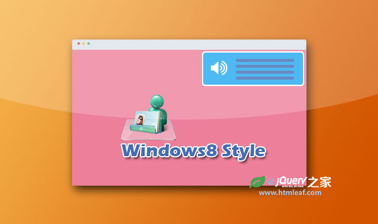

第一章 JavaScript简介
1.1 JavaScript是什么
1.1.1 JavaScript简介
JavaScript就是我们通常所说的“JS”。这是一种嵌入到HTML页面中的编程语言，由浏览器一边解释一边执行。
我们都知道，前端最核心的三种技术是HTML、CSS、JavaScript，如图1-1所示。有些初学的小伙伴就会问了，这三者之间有什么区别呢？
“HTML控制网页的结构，CSS控制网页的外观，而JavaScript控制网页的行为。”
我晕，这不是等于没说吗？好吧，给大家打个比方。我们可以把“前端开发”看成“建房子”，做一个网页就像盖一栋房子。 建房子的时候，都是先把结构建好（HTML）。建好之后，再给房子装修（CSS），例如往窗户装上窗帘、往地面铺上瓷砖等。 最后装修好了呢，当夜幕降临的时候，我们要打开灯（JavaScript）才能把屋子照亮。现在小伙伴们懂了吧？
我们再回到实际例子中去，看一下绿叶学习网（www.lvyestudy.com）的导航条。其中“前端入门”这一栏目具有以下基本特点。
我们可能会疑惑,这些效果是怎么做出来的呢?其实思路跟上面的“建房子"是一样的。我们先用HTML来搭建网页的结构。 默认情况下,字体类型、字体大小、背景颜色,如图1-2所示。
然后,我们使用CSS来修饰一下,改变字体类型、字体大小、背景颜色,如图1-3所示。
最后,我们再使用JavaScript为鼠标定义一个行为。当鼠标移到上面时,背景颜色会变成蓝色,如图1-4所示。
到这里,大家应该知道一个缤纷绚丽的网页是怎么做出来的了吧？了解这个过程,对于你准确理解HTML, CSS和JavaScript这3者之间的关系是相当重要的。
只使用了HTML和CSS的页面一般只供用户浏览,而Javascript的出现,使得用户可以与页面进行交互(如定义各种鼠标效果),实现更多的功能。 拿我们绿叶学习网来说,二级导航、图片轮播、返回顶部等功能都用到了JavaScript,如图1-5所示。因为HTML和CSS只是描述性的语言, 仅仅使用这两个工具是没办法做出那些特效的,而必须使用编程的方式来实现,也就是JavaScript。
1.1.2 教程介绍
在学习JavaScript之前,你必须要有一定的HTML和CSS基础知识。本书是